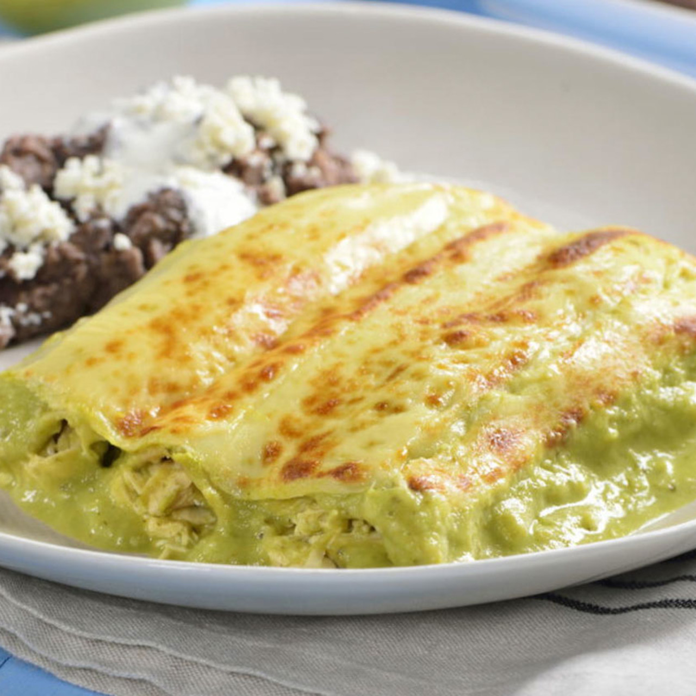

Recetas
Enchiladas suizas

Ingredientes
- tortillas de maiz
- Pechiga de pollo desmenuzada
- Salsa verde(tomatillo, ajo, chile, cebolla)
- crema
- queso
Instrucciones:
- Asa y licua los tomatillos, chile, ajo y cebolla.
- Frie la salsa en una olla, agrega crema y zasona.
- Rellena las tortillas de pollo y colocalas en el refractario.
- Baña con salsa, cubre con queso y hornea hasta gratinar.
- Cirbe caliente con crema y cebolla en rodajas.
Torta ahogada
Ingredientes:
- Birote salado(pan duro tipo bolillo).
- Carnitas o pierna de cerdo desmenuzada.
- Salsa de chile de arbol.
- Salsa de jitomate.
- Cebolla morada en rodajas.
- Limon y oregano
Instrucciones:
- Rellena el birote con carnitas calientes.
- Baña primero con la salsa de jitomate y luego con la de chile(al gusto).
- Decora con cebolla, organo y unas gotas de limon
Aguachile
Ingredientes:
- 500 g de camaron grudo, limpio y sin cascara
- 1 pepino en rodajas.
- Cebolla morada en tiras.
- Jugo de limon.
- chile serrano.
- ajo.
- sal.
Instrucciones
- limpia los camarones y abrelos por la mitad(tipo mariposa).
- licua los chiles, el ajo, sal y luego el limon.Agrega un poco de agua si queda muy espeso.
- Coloca los camarones en un recipiente y vierte la mezcla encima.
- Agrega cebolla y pepino, mezcla bien.
- Sirve acompañado de tostadas o galletas saladas.
Pizza
 Ingredientes
Ingredientes
- Maza para pizza.
- Salsa de tomate natural.
- Queso mozzarella.
- Hojas de albaca fresca.
- Aceite de oliva
- sal.
Instrucciones
- Estira la masa y coloca sobre la mesa enharinada.
- Agrega salsa de tomate, sal y aceite de oliva.
- Coloca queso y hornea a 220°C por 15min.
- Decora con hojas de albahaca y un chorrito de aceite de oliva.